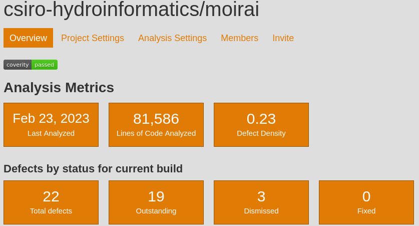
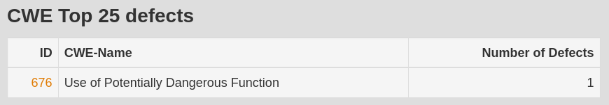
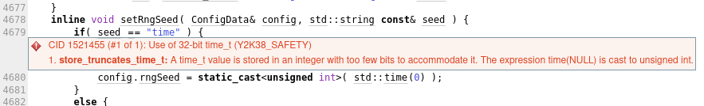
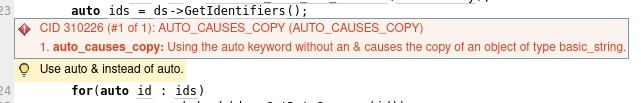
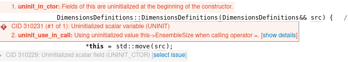

Background
A discussion on “cybersecurity” with a colleague touched on C/C++. This reminded me that I have not used static code analysis on some C++ code for a while. I had set up a scan for a project back in 2013, and used static scans and memory leak detection on other projects, but it is time to revisit static scaning in this post.
Resources
The article Top 9 c static code analysis tools is but one resource listing options. I have used Coverity some years ago on an open source C interop product, and was impressed by what it. In this post I’ll give a try to cppcheck
Installation
On linux the free version of cppcheck is easily installable with sudo apt-get install cppcheck
Coverity seems to have been bought but the coverity scan service is still available for open source projects. Login in with github identity, as the projects I intend to scan are hosted on github.
Case studies
Moirai
Moirai is a library is handling object lifetime of C++ objects used by external languages.
cppcheck
Scaning the library with the command:
cppcheck -I include/ src/ 2> err.txtflags no error. cppcheck is known for minimising false positives.
coverity scan
Moving on to scan with coverity via coverity scan:
- Button “Register my github project”
- You need a manual refresh of your repo list with “Please load the repository list to select from your GitHub projects”
Register Your Open Source GitHub Project on Coverity Scan
“Once submitted, your project will be available when analysis is completed. It can take up to 48 hours for the first analysis to complete” (in practice, much less delay)
“Upload a Project Build”
One needs to download the Coverity Scan Build Tool: C/C++ and follow instructions. cov-analysis-linux64-2022.06.tar.gz for linux64 in my case. This is a 1.1GB download, so it takes some time.
Check the download with md5sum cov-analysis-linux64-2022.06.tar.gz
tar zxpvf cov-analysis-linux64-2022.06.tar.gz
ls cov-analysis-linux64-2022.6.0
mv cov-analysis-linux64-2022.6.0 ~/bin/Update the PATH env var to add ~/bin/cov-analysis-linux64-2022.6.0/bin as per the instructions. Check with which cov-build.
Then moving to build the project:
cd ~/src/moirai/build
make cleancov-build --dir cov-int make -j 4
tail cov-int/build-log.txt
# Emitted 10 C/C++ compilation units (100%) successfullytar caf moirai.bz2 cov-int
There is a warning “Linux users on kernel version 4.8.x and newer will need to apply a sysctl parameter to support our binaries”. I am running on a Linux xxxxxx 5.10.0-21-amd64, and this seems to have worked fine.
version 1.2.0
Pressing “Upload Tar File”
Last Build Status: In-queue. Your build is in the queue to be analyzed. There are 3 builds ahead of it.
An email notifies:
Analysis Summary:
Defects found: 19
The badge says the code passes the scan; a priori good. The defect density of 0.23, which is below the 0.35 for projects less than 100K LOC (as of 2013 though).
CWE-676: Use of Potentially Dangerous Function. “Likelihood Of Exploit” is High.

Using the “View Defects” button opens a dashboard with more details of the various potential issues. Most appear to arise in the third party codebase, the header-only unit test framework used, Catch. This happens to be an old version as well, so a newer version may not have these issues. But this is a low concern at any rate, as unit tests are not compiled into the library itself.
It is not entirely clear which issue is flagged “CWE-676” actually, perhaps:

There are a couple of issues mentioned that may impact the library itself, but nothing that warrants particular concern and more suggestions for improvements (e.g. “A move contructor may improve speed”)
uchronia time series
cppcheck
Using cppcheck on Uchronia reports some “double memory freeing” errors, which I think are more a software stability than security concern.
include/datatypes/time_series_io.hpp:1037:15: error: Memory pointed to by 'values' is freed twice. [doubleFree]
delete[] values;Upon inspection this actually appears to be a false flag, where the memory is freed once before an exception is thrown:
if (code != NC_NOERR) {
delete[] values;
ExceptionUtilities::ThrowInvalidOperation("SetVariableDimOne failed for variable ID " + std::to_string(varId));
}Maybe this is a suggestion that the body should be refactored with a try / finally syntax, but this is a low priority task.
include/datatypes/time_series_strategies.hpp:477:12: error: Array index -1 is out of bounds. [negativeContainerIndex]
return buffer[-1];This is indeed odd at first sight, but upon inspection this is again a line that cannot be reached because of an exception being thrown beforehand, and added to mote a compiler complaint. Still, this probably warrants something less quirky.
Moving on to using coverity
coverity scan
“No top 25 CWE defects were found.”
Defect density of 0.10 for 185,219 LOC. Most of the lines of course would result from third party work including Boost libraries, so the low density may well be mostly because of third party work.
There are a couple of suggestions of a type that would improve performance:

Other types of errors deal with uninitialised object members. Whether these are false positives, or very unlikely to occur given typical practices, these should be followed up.
